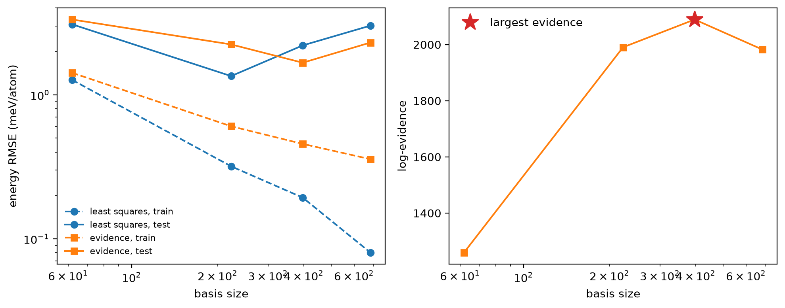

Tutorial 5: basis size, overfitting and the evidence¶
In Tutorial 4 a near-perfect fit got a vacancy wrong because the data did not cover the question. This time the data covers the question, and the risk is the model: how large a basis can 40 silicon structures support?
Goals
- Hold out a test set, and fit the same data with a growing basis.
- Watch plain least squares fit its training set better and better while the gap to the test set opens.
- Fit the same bases with the evidence (Bayesian) fit, and use its log-evidence to choose the basis size without looking at the test set.
It is adapted from notebook E1x of the MLIP School 2026.
Run this notebook. Install uv. Then run this command:
uvx marimo edit --sandbox https://raw.githubusercontent.com/ACEsuit/ace-jax/main/docs/user/tutorials/notebooks/school_basis_si.py
The notebook opens in your browser. You do not need an account. You can also open the notebook in molab, the marimo hosted service. You must sign in to run it there.
This website shows a static copy of the notebook, run on a CPU when the site was built. Run time: approximately 4 minutes on a CPU. Most of this time is for the eight fits in Step 2.
import pathlib
import time
import urllib.request
import jax
jax.config.update("jax_enable_x64", True) # fitting needs float64
import marimo as mo
import matplotlib.pyplot as plt
import numpy as np
from ase.io import read
Step 1: the data and a test set¶
reference.xyz holds 250 rattled and strained bulk silicon cells (8 and
16 atoms) from the MLIP school, labelled with MACE-MPA-0 (see Tutorial 4)
under the keys energy, forces and virial. Nothing here labels
anything new.
A test set is the structures the fit never sees. Shuffle before splitting,
since the file is ordered by cell size, and hold out 20%. Of the other 200,
the fits below train on only N_TRAIN = 40: few enough data that a large
basis can overfit them (exercise 3 trains on all 200).
URL = ("https://raw.githubusercontent.com/ACEsuit/ace-jax/main/"
"docs/user/tutorials/data/school/e1x/reference.xyz")
work = pathlib.Path("ace_jax_tutorial_5")
work.mkdir(exist_ok=True)
_local = (mo.notebook_dir() / "../data/school/e1x/reference.xyz") if mo.notebook_dir() else None
data_file = work / "reference.xyz"
if _local is not None and _local.exists():
data_file.write_bytes(_local.read_bytes())
elif not data_file.exists():
urllib.request.urlretrieve(URL, data_file)
frames = read(data_file, ":")
_order = np.random.default_rng(11).permutation(len(frames))
_cut = int(0.8 * len(frames))
N_TRAIN = 40 # of the 200; exercise 3 sets it to 200
train_frames = [frames[i] for i in _order[:_cut]][:N_TRAIN]
test_frames = [frames[i] for i in _order[_cut:]]
mo.md(f"**{len(frames)}** structures: **{len(train_frames)}** for training (of {_cut}), "
f"**{len(test_frames)}** held out.")
250 structures: 40 for training (of 200), 50 held out.
Step 2: two fits per basis¶
The sweep holds everything fixed (correlation order 3, cutoff 5.5 Å) except the maximum total degree, so any change is down to the basis size. Each basis is fitted twice:
- least squares (
solver="lstsq"): minimise the weighted squared error of energies, forces and virials, with weights 30, 1 and 1 (the ACEpotentials defaults) and nothing else. This is what the school's workbench did. - the evidence fit (the default, as in Tutorials 1 and 4): Bayesian linear regression with a smoothness prior on the coefficients, its noise levels and prior scale chosen by maximising the evidence \(p(\text{data} \mid \text{basis})\).
On the command line the two are
aj fit --order 3 --max-degree 12 --train train.xyz --test test.xyz \
--e0 lsq --weights '{"default": {"E": 30, "F": 1, "V": 1}}' \
--solver lstsq --out lstsq12
aj fit --order 3 --max-degree 12 --train train.xyz --test test.xyz \
--e0 lsq --weights '{"default": {"E": 30, "F": 1, "V": 1}}' \
--opt lbfgs --out evidence12
from ace_jax.basis.model import BasisSpec, build_basis
from ace_jax.fit.pipeline import FitConfig, fit, load_fit_data
DEGREES = (8, 12, 14, 16)
WEIGHTS = {"default": {"E": 30.0, "F": 1.0, "V": 1.0}}
_t0 = time.time()
sweep = []
with mo.status.progress_bar(total=2 * len(DEGREES), title="Fitting") as _bar:
for _d in DEGREES:
_basis = build_basis(BasisSpec(order=3, max_degree=_d, rcut=5.5, elements=("Si",)))
_row = {"degree": _d, "basis": int(_basis.meta["len_basis"])}
for _solver in ("lstsq", "evidence"):
_cfg = FitConfig(model=_basis, arm="linear", m_per_species=0, e0="lsq", opt="lbfgs", r0=None,
rungs=("map",), solver=_solver, weights=WEIGHTS, predict_train=True,
predict_stats="recompute",
energy_key="energy", force_key="forces", virial_key="virial").validate()
_res = fit(_cfg, load_fit_data(_cfg, train=train_frames, test=test_frames, log=lambda *a: None),
log=lambda *a: None)
_k = "lstsq" if _solver == "lstsq" else "map"
_m = _res.preds.metrics
_row[_solver] = {"train": _m[f"train/{_k}"]["E"]["rmse"], "test": _m[f"test/{_k}"]["E"]["rmse"]}
if _solver == "evidence":
_row["log_evidence"] = _res.map.log_evidence
_bar.update(subtitle=f"degree {_d}, {_solver}")
sweep.append(_row)
sweep_seconds = time.time() - _t0
mo.md("| degree | basis | lstsq train | lstsq test | evidence train | evidence test | log-evidence |\n"
"|---|---|---|---|---|---|---|\n"
+ "\n".join(f"| {r['degree']} | {r['basis']} | {r['lstsq']['train']:.2f} | {r['lstsq']['test']:.2f} | "
f"{r['evidence']['train']:.2f} | {r['evidence']['test']:.2f} | {r['log_evidence']:.0f} |"
for r in sweep)
+ f"\n\nEnergy RMSE in meV/atom. {2 * len(DEGREES)} fits in {sweep_seconds:.0f} s.")
| degree | basis | lstsq train | lstsq test | evidence train | evidence test | log-evidence |
|---|---|---|---|---|---|---|
| 8 | 62 | 1.27 | 3.08 | 1.42 | 3.33 | 1260 |
| 12 | 223 | 0.32 | 1.35 | 0.60 | 2.24 | 1990 |
| 14 | 397 | 0.19 | 2.20 | 0.46 | 1.67 | 2089 |
| 16 | 684 | 0.08 | 3.02 | 0.36 | 2.30 | 1983 |
Energy RMSE in meV/atom. 8 fits in 266 s.
Step 3: read the curves¶
The left panel is the school's picture. The right panel is what the evidence fit adds: a score for each basis computed from the training data alone.
n = np.array([r["basis"] for r in sweep])
ls_train, ls_test = (np.array([r["lstsq"][k] for r in sweep]) for k in ("train", "test"))
ev_train, ev_test = (np.array([r["evidence"][k] for r in sweep]) for k in ("train", "test"))
log_ev = np.array([r["log_evidence"] for r in sweep])
by_evidence = int(np.argmax(log_ev)) # the training data's choice
by_test = int(np.nanargmin(ls_test)) # what the held-out set says, for least squares
by_test_ev = int(np.nanargmin(ev_test)) # ... and for the evidence fit, the basis it chooses for
_fig, (_a1, _a2) = plt.subplots(1, 2, figsize=(10, 4))
_a1.loglog(n, ls_train, "o--", c="C0", label="least squares, train")
_a1.loglog(n, ls_test, "o-", c="C0", label="least squares, test")
_a1.loglog(n, ev_train, "s--", c="C1", label="evidence, train")
_a1.loglog(n, ev_test, "s-", c="C1", label="evidence, test")
_a1.set_xlabel("basis size"); _a1.set_ylabel("energy RMSE (meV/atom)"); _a1.legend(frameon=False, fontsize=8)
_a2.plot(n, log_ev, "s-", c="C1")
_a2.plot(n[by_evidence], log_ev[by_evidence], "*", ms=16, c="C3", label="largest evidence")
_a2.set_xscale("log"); _a2.set_xlabel("basis size"); _a2.set_ylabel("log-evidence"); _a2.legend(frameon=False)
_fig.tight_layout()
_fig

Checkpoint 1 passed: least squares fits its training set better with every basis (down to 0.08 meV/atom), but its test error is lowest at 223 functions and rises beyond; at 684 functions it is 37.6× the training error: the larger bases fit noise.
Checkpoint 2 passed: the log-evidence is largest at 397 functions (degree 14), where the evidence fit also tests best (1.67 meV/atom): a basis chosen without looking at the test set.
What the evidence is doing¶
The log-evidence \(\log p(\text{data} \mid \text{basis})\) is the probability of the training data under the model. It is an average over all coefficient vectors that the prior allows, not the value at the best vector.
A larger basis can always fit the data better. But its prior also covers many more coefficient vectors that fit badly, and these decrease the average (the "Occam factor"). Thus the evidence increases while new functions explain real structure. It decreases when new functions explain only noise.
Two things to notice in the table:
- Tuned on the test set, least squares does best: 1.35 meV/atom at 223 functions. But that choice spent the test set. The evidence picks 397 functions from the training data alone, where the evidence fit tests at 1.67 meV/atom.
- Past the best size, the evidence fit degrades more gently. At 684 functions least squares tests at 3.02 meV/atom, 2.2× its best; the evidence fit at 2.30, 1.4× its best. Its noise levels are fitted too, so it is told how much of the data is noise and does not chase it (exercise 2 compares the forces).
The test set is still the final judge; the evidence lets you choose without spending one.
Exercises¶
- Other knobs. The basis has two more: the correlation order (
order, 2 to 4) andwLinBasisSpec, which trades angular against radial resolution. Compare them at matched basis size, not matched degree: otherwise you only learn that bigger models fit better. Does the log-evidence agree with the test set? - Forces. Add the test force RMSE (
metrics["test/map"]["F"]["rmse"], and"test/lstsq"for least squares) to the table. Which fit is better on forces? - More data. Set
N_TRAIN = 200in Step 1, five times the data. Does least squares still overfit within this sweep? Where does the log-evidence peak now?
Hint for exercise 3
With 200 frames least squares no longer overfits in this sweep: its test error falls with every basis, to about 0.9 meV/atom at 684 functions, and the log-evidence rises all the way to the largest basis too. Five times the data supports every basis here; to see the evidence turn over you would need a larger one (degree 18 has over 1,000 functions).
Summary¶
FitConfig(solver="lstsq")(aj fit --solver lstsq) is plain weighted least squares: no prior, no uncertainty. A basis too large for the data overfits.- The evidence fit reports
res.map.log_evidence. It is comparable across bases fitted to the same data, and its maximum picks a basis size from the training data alone.
Next: Tutorial 6 finds what a bulk dataset is missing for a surface, and repairs it.